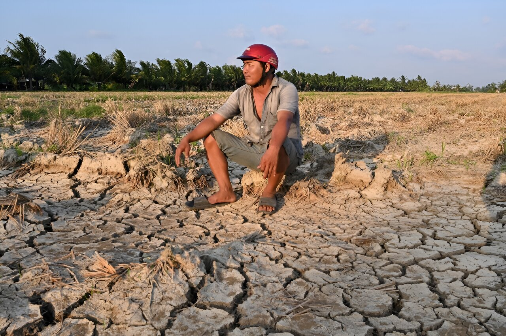
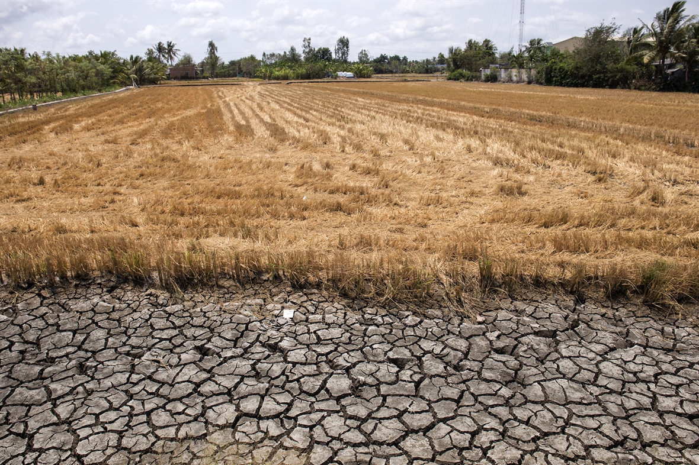

Một buổi sáng ở miền Tây, mặt đất nứt nẻ như những vết chân chim. Ở những vùng ven biển, nước mặn lặng lẽ len sâu vào ruộng đồng, phủ lên lớp đất vốn từng nuôi sống biết bao thế hệ. Xa hơn một chút, trên những tuyến đường dẫn ra khỏi làng, những chuyến xe khách vẫn đều đặn rời đi mang theo những con người không còn bám trụ được với ruộng vườn.
Đồng bằng sông Cửu Long, nơi từng được xem là “vựa lúa” của cả nước, đang đứng trước một ngã rẽ lớn. Không chỉ là câu chuyện về biến đổi khí hậu hay kinh tế nông nghiệp, đó là câu chuyện về con người, về những lựa chọn ngày càng trở nên khó khăn hơn: ở lại hay rời đi.
trong 10 năm
canh tác đất
(từ gần 20%)
Trong vòng một thập kỷ qua, đã có gần 1,7 triệu người rời khỏi vùng đất này. Con số ấy phản ánh sự dịch chuyển lao động, cho thấy một sự thay đổi sâu sắc trong cấu trúc sinh kế.
Khi đất không còn nuôi nổi người, người buộc phải rời bỏ đất.Thực trạng 2012-2022
Tấm đệm sinh tồn đang biến mất
Ở đồng bằng sông Cửu Long, đất không chỉ là tư liệu sản xuất. Nó là thứ giúp người ta trụ lại khi mọi thứ khác sụp đổ.
Một mùa lúa thất bát, người ta còn đất để làm lại. Một năm tôm chết trắng, người ta vẫn còn đất để vay mượn, xoay xở. Đất, theo cách đó, giống như một “tấm đệm sinh tồn” âm thầm giữ cho cuộc sống người không rơi xuống đáy.
Tỷ lệ dân số sống dưới ngưỡng nghèo
| Trong trường hợp không có cú sốc | Tác động trực tiếp | Tác động trực tiếp và lân cận | Tác động tỷ lệ theo khoảng cách | ||
|---|---|---|---|---|---|
| Cơ sở | 2024 | 24,91 | 24,91 | 24,91 | 24,91 |
| Lũ lụt (2020) | 2030 | 18,40 | 19,60 | 23,83 | 20,22 |
| 2050 | 5,77 | 9,06 | 28,28 | 11,24 | |
| Lũ lụt 2050 SSP 2-4.5 (AEP) | 2030 | 18,40 | 19,58 | 23,81 | 20,26 |
| 2050 | 5,77 | 9,00 | 28,60 | 11,04 | |
| Lũ lụt 2050 SSP 5-8.5 (AEP) | 2030 | 18,40 | 19,64 | 24,33 | 20,28 |
| 2050 | 5,77 | 9,62 | 28,98 | 12,12 | |
| Hạn hán | 2030 | 18,40 | 21,46 | 31,00 | 23,41 |
| 2050 | 5,77 | 12,75 | 61,72 | 20,56 | |
| Bão 2020 | 2030 | 18,40 | 18,44 | 19,40 | 18,46 |
| 2050 | 5,77 | 5,85 | 7,66 | 5,95 | |
| Bão 2050 SSP 5-8.5 | 2030 | 18,40 | 18,54 | 21,44 | 18,72 |
| 2050 | 5,77 | 6,13 | 13,55 | 6,47 | |
| Xâm nhập mặn 2050 RCP 4.5 với LS | 2030 | 18,40 | 26,17 | 35,11 | 30,10 |
| 2050 | 5,77 | 24,67 | 27,41 | 25,67 | |
| Xâm nhập mặn 2050 RCP 8.5 với LS | 2030 | 18,40 | 26,63 | 35,95 | 31,50 |
| 2050 | 5,77 | 26,25 | 28,58 | 27,01 | |
| Xâm nhập mặn 2050 RCP 8.5 với ESLR | 2030 | 18,40 | 26,67 | 37,01 | 31,14 |
| 2050 | 5,77 | 26,95 | 29,90 | 27,86 |

Nhưng tấm đệm ấy đang mỏng dần
Trong nhiều năm trở lại đây, người dân đồng bằng sông Cửu Long phải đối mặt với cơn “khủng hoảng kép” khi các cơn hạn mặn nghiêm trọng đến cùng với đại dịch Covid-19.
Mùa màng bị phá huỷ và kinh tế khó khăn đã đẩy nhiều hộ gia đình vào đường cùng, buộc họ phải bán đất để tồn tại. Tình trạng này đã khiến số hộ không còn đất canh tác hoặc không còn trực tiếp làm nông tăng nhanh.

Đến năm 2022, khoảng 40% hộ nông thôn ở Đồng bằng sông Cửu Long không còn dựa vào đất như nguồn sống chính. Con số ấy không chỉ nói về kinh tế, mà phản ánh một sự đứt gãy.
Đứt gãy
giữa con người và ruộng đồng
Những mảnh ruộng nhỏ dần biến mất khỏi tay các hộ nông dân nhỏ lẻ. Một phần được các hộ gia đình khá giả hơn mua lại trong thời kỳ khủng hoảng. Một phần được chuyển đổi sang nuôi trồng thủy sản, cây ăn trái. Và cũng có một phần bị bỏ hoang, vì không còn ai đủ sức hoặc đủ niềm tin để canh tác.

Bà Đặng Hồng Nhi (47 tuổi, quê Cà Mau) nhớ lại quãng thời gian trước khi rời quê: “Có vuông tôm thì nuôi quanh năm, ngày nào cũng có cái ăn. Nhưng giờ làm không nổi nữa… nên mới phải đi”.
Câu nói ấy chẳng có gì kịch tính. Nhưng chính sự bình thản đó lại cho thấy một điều: việc rời bỏ đất không còn là một quyết định bất thường, mà đang dần trở thành một lựa chọn quen thuộc.
Tỷ lệ hộ gia đình không có hoặc gần như không có đất nông nghiệp ở nông thôn, theo vùng và năm
| Vùng | 2006 | 2016 | 2022 | Xu hướng 2022 |
|---|---|---|---|---|
| — | Tổng / Nữ | Tổng / Nữ | Tổng / Nữ |